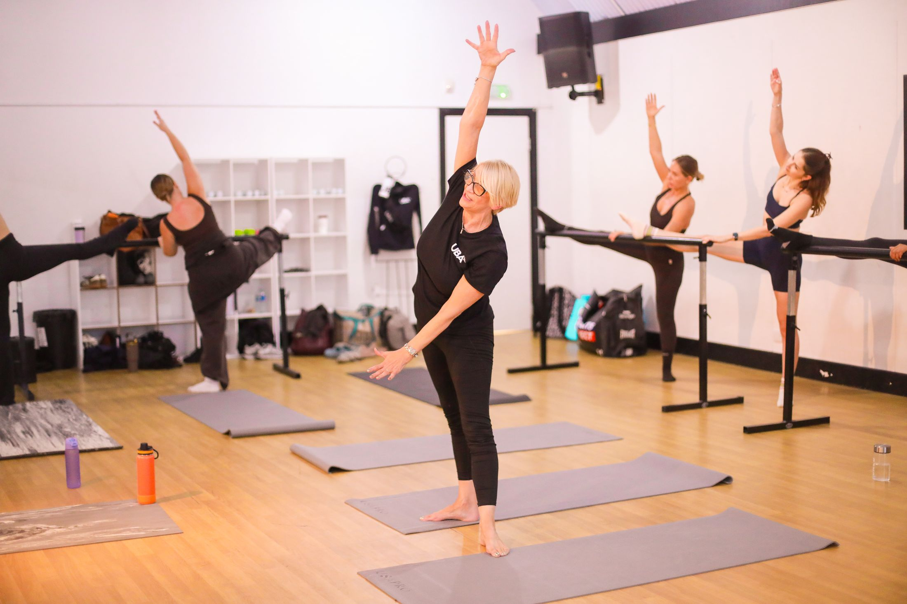
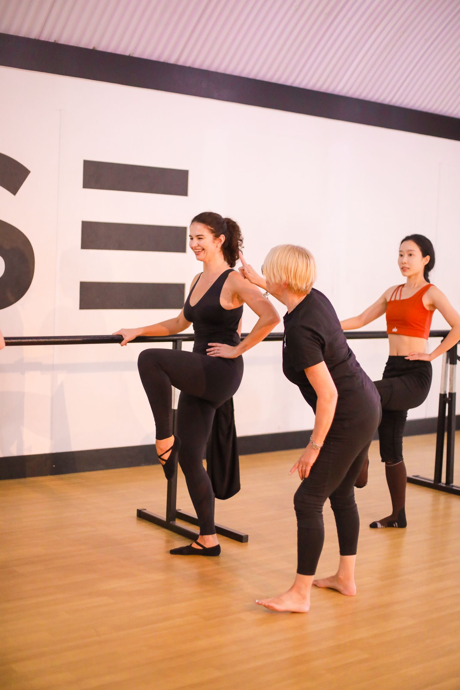

A new standardfor Barre education.
CPD-accredited Barre instructor certification. One intensive day, eight modules, trained in person by an expert UBA instructor.
6–10 places ·

UK Barre Academy, in two minutes.
The method, the training day, Maggie Paterson’s 40 years of experience, and our upcoming courses.
A new standard for Barre education, from day one.
UK Barre Academy is inviting a small group of qualified movement professionals to its Founding Instructor Programme: classical Barre technique combined with intelligent movement, strength, alignment, musicality and confident teaching practice.
participants per cohort, so everyone gets individual feedback
intensive training day, in person in London
CPD hours, independently accredited
years of ballet, dance, Pilates and fitness behind the method
Forty years of movement, in one method.
Maggie Paterson, founder of UK Barre Academy, brings her experience across ballet, dance, Pilates, yoga and fitness to every module, from alignment and core strength to musicality and confident class delivery.



From application to Founding Instructor.
Three steps, one day in the studio, and up to three months to practise before your assessment.

8 modules, 8 hours, one complete method.
Designed to help instructors understand not only how to perform Barre exercises, but how to teach them safely, effectively and confidently.
One intensive day · 9:30am–6:30pm- 01Foundations, Warm-Up and Alignment
- 02Pilates Core Foundation
- 03Feet, Ankles, Knees and Hips
- 04Classical Barre Technique
- 05Barre Flow, Choreography and Cardio Conditioning
- 06Upper Body Strength and Arm Definition
- 07Leg Strength and Barre Conditioning
- 08Barre Stretch, Mobility and Recovery
Movement professionals, ready to add Barre.
The programme is suitable for
- Pilates instructors
- Yoga teachers
- Personal trainers
- Group exercise instructors
- Dance teachers
- Experienced dancers
- Qualified fitness professionals adding Barre
Applicants are asked for their qualifications and relevant movement or teaching experience.
Your course fee includes
CPD accredited- Full practical training day
- 8-module UBA Method
- Training manual and workbook
- Teaching resources and class planning
- Up to 3 months to practise
- Practical video assessment
- Certification on successful assessment
- CPD-accredited specialist training
- No compulsory annual membership
- No ongoing licence or per-class fees
The framework, not a script
Combine the UBA formula with the Pilates, PT, yoga or dance experience you already bring.
No compulsory ongoing fees
No annual membership, licence or per-class fee to keep teaching the method.
Founding cohort reviews
Well-balanced training
“The intensity of the course is well balanced. Whether you have prior training experience or not, everyone can make progress within this framework. It is an excellent course.”
A clear, structured approach
“The UBA training is highly systematic, with a complete sequence from warm-up and targeted muscle work through to the final cool-down. There is plenty to reflect on and explore.”

Music that motivates
“What I enjoyed most was the way music is paired with movement. It keeps the practice from feeling monotonous and gives great motivation to move with the rhythm.”

The value of a small group
“The small group format worked really well. I benefited from being able to contribute, exchange with others and listen to individual feedback.”
Exceeded my expectations
“The training exceeded my expectations. Maggie made the course engaging from start to finish, sharing her vast knowledge clearly and with passion and enthusiasm in an inclusive environment for all abilities.”
Practical, module by module
“I found the practical exercises throughout the day especially valuable to understand the concepts of each module. I have already bought a barre to practise at home!”

“An excellent course.”
“Highly systematic.”
“Great motivation to move.”
“Small group, real attention.”
“Exceeded my expectations.”
“Already bought a barre to practise at home!”
“An excellent course.”
“Highly systematic.”
“Great motivation to move.”
“Small group, real attention.”
“Exceeded my expectations.”
“Already bought a barre to practise at home!”
Dates & fee
One day of attendance, limited to 6–10 places per cohort. Full arrival details are shared ahead of your session.
- Sunday 4 October 2026Founding cohort · CompletedSold out
- Sunday 25 October 2026City Academy, ClerkenwellSold out
- Saturday 5 December 2026The Manor, Finsbury ParkBooking now

The Manor, Finsbury Park, London N4 3JP · 9:30am–6:30pm
By booking you agree to our Terms & Conditions.
Founding Instructor Course
- Eight hours of practical, in-person training
- The complete eight-module method and handbook
- UBA certification and Independent CPD Accreditation
- Founding Instructor recognition
- Priority access to future UBA training
Please read our Terms & Conditions (including cancellations and refunds) before booking.
A 50% introductory rate for the inaugural cohort, in return for constructive feedback after the course.